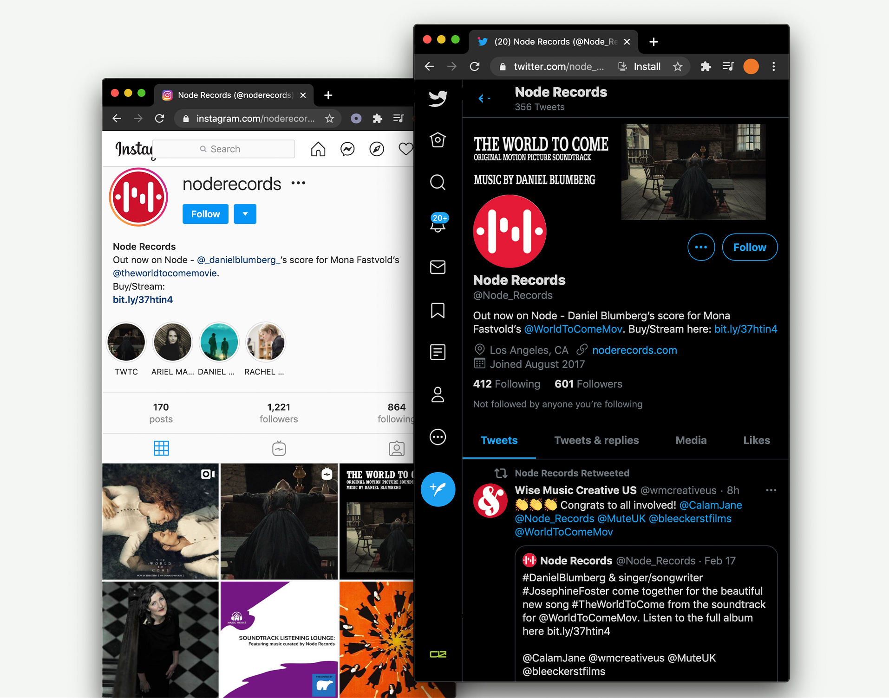

NODE RECORDS
Music. Vision. Passion.
FEATURED RELEASE
THE WIFE
Pook's music plays a strong role in creating the complex undercurrents and powerful, emotional atmospheres that Bjorn Runge's brilliant thriller demands. Now available on all major digital music platforms! "Jocelyn Pook's understated musical score may ..."
10.02.2020
